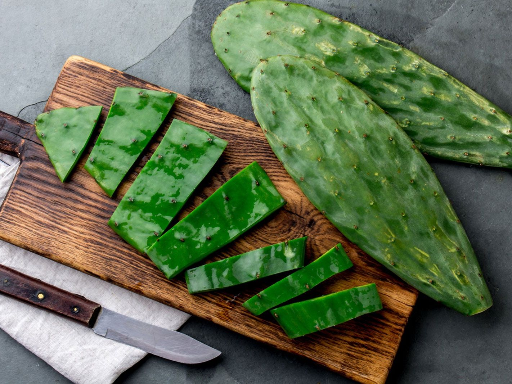

To Be Determined
This is where I put foods that I either haven't tried or I haven't catagorized yet, so the jury's still out on these.
Cactus
I've never eaten cactus before, but I'd really like to try it. You'd think that with cactus being the kind of defensive plant that it is, it wouldn't be very good as a food item, but I'm told that it is.